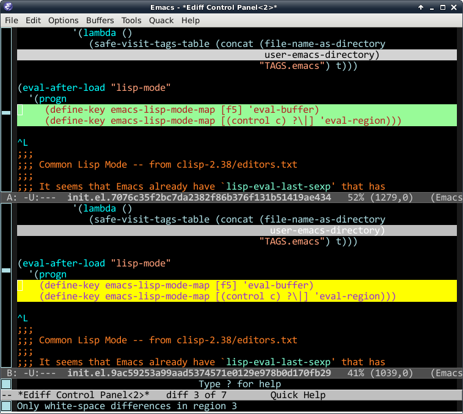
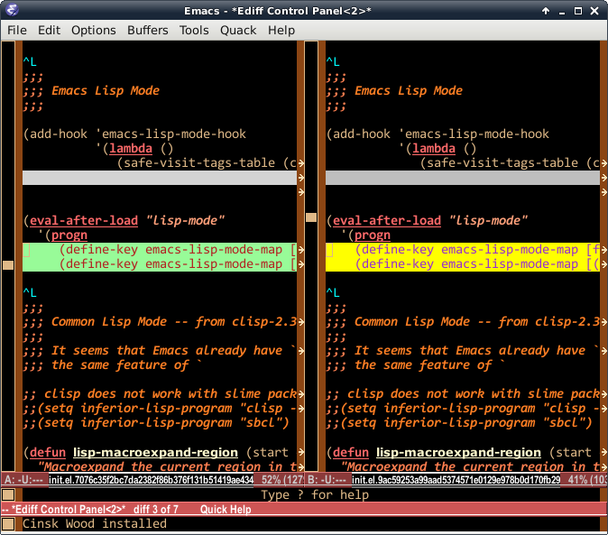

Smart ediff widen frame on Emacs
One of the reason that I love Emacs is the ediff package, which provides nice diff interface that I cannot find similar feature in other editors. Here are some screenshots of sample ediff session:

The first one (on left-side) uses the default split, called
vertical split, and the second one (on the right-side) is called
horizontal split. You can switch back and force using | or M-x
ediff-toggle-split command in the ediff control buffer. As you can
see here, the horizontal split looks much more readable. One
problem, though. Normally, I uses 80 character width for a emacs
frame. If I choose to use the horizontal split, it automatically
split the windows in the 80-char-width frame, so that each window
will have about 40 characters. (Actually, depending on the width of
the scroll bar and the internal borders, it will be smaller than 40
characters).
Around a couple of years ago, I wrote custom hook function to
automatically widen the frame on the "horizontal split" and restore
to the original frame width when ediff session finished. What makes
me to feel stupid is, Ediff has already provided that feature years
ago. If you use m or M-x ediff-toggle-wide-display on the ediff
control buffer, the frame width will span to that of the display.
One problem is, I use two LCD minitor, combined into one X display
(using nvidia's TwinView feature). Each monitor supports 1920x1080,
so my X window system provides 3840x1080 display. That means, if I
call ediff-toggle-wide-display, the screen will look like:
{kind=link}
As you can see, this is unacceptable. So, again, I need to modify the configuration little bit, so that it will widen the frame in a reasonable amount.
Let's find out which code should be modified. On the ediff control
buffer, C-h k m shows that the m command is binded to
ediff-toggle-wide-display in ediff-util.el. After reading the
function code, ediff-toggle-wide-display will call the function in
the value of ediff-make-wide-display-function, which is set to
ediff-make-wide-display by default. This means that, if I write my
own function that does the job of ediff-make-wide-display, problem
will be solved! Yeah~
But what makes me troubled is, it is not straight-forward to determine the 'reasonable amount of frame width. Several ideas come up to my mind:
- Normally, most people prefer 80 character width for a window. What
about
80 * 2 = 160for the widened frame? — No, using hard-coded value is always a bad choice. - Each buffer can have its own
fill-columnvalue, which is 70 by default. What about to usefill-column * 2? — No, probably using the previous width of the windows is the better. - Ediff provides 2 way diff or 3 way diff job. Merely doubling the width is not good. Depending 2-way-diff or 3-way-diff, I might need to multiply by two or by three.
- In any case, user might want to use specific width. It will be
handy, if
mcommand can have prefix value for the exact width of the window. For example,160mwill set window width to 160, so that total frame width will be160 * 2 = 320character width.
To provide the prefix value, I need to wrap the
ediff-toggle-wide-display with my own advice function:
(defadvice ediff-toggle-wide-display (around cinsk/ad-ediff-toggle-wide-display
())
(interactive)
(let ((w (prefix-numeric-value current-prefix-arg))
(min-width (cond ((window-live-p ediff-window-A)
(if (eq ediff-split-window-function
'split-window-vertically)
;; ediff windows splitted like A/B
(window-width ediff-window-A)
;; ediff windows splitted like A|B
(frame-width (window-frame ediff-window-A))))
((buffer-live-p ediff-buffer-A)
(buffer-local-value 'fill-column
ediff-buffer-A))
(t (max fill-column 70)))))
(setq w (max min-width w))
(message "width: %S" w)
(let ((cinsk/ediff-wide-window-width w))
ad-do-it)))
(ad-activate 'ediff-toggle-wide-display)
Since advice function cannot change the function interface of the
advised function, I'm not sure if I can use current-prefix-arg in
the advice function like above. One more bad design is, above code
relies on the dynamic binding of the local variable,
cinsk/ediff-wide-window-width. Anyway it works as I expected. :)
For the ediff-make-wide-display-function, I'll use following
function instead of genuine one:
(defun cinsk/ediff-make-wide-display ()
"Construct an alist of parameters for the wide display.
Saves the old frame parameters in `ediff-wide-display-orig-parameters'.
The frame to be resized is kept in `ediff-wide-display-frame'.
This function modifies only the left margin and the width of the display.
It assumes that it is called from within the control buffer."
(if (not (fboundp 'ediff-display-pixel-width))
(error "Can't determine display width"))
(let* ((frame-A (window-frame ediff-window-A))
(frame-A-params (frame-parameters frame-A))
(fw (frame-width frame-A))
(fpw (frame-pixel-width frame-A))
(cw (ediff-frame-char-width frame-A))
(febw cw) ; frame external border width
(fibw (- fpw (* fw cw))) ; frame internal border width
desired-fw desired-fpw desired-left)
(setq ediff-wide-display-orig-parameters
(list (cons 'left (max 0 (eval (cdr (assoc 'left frame-A-params)))))
(cons 'width (cdr (assoc 'width frame-A-params))))
ediff-wide-display-frame frame-A)
(setq desired-fw (* cinsk/ediff-wide-window-width
(if (and (boundp 'ediff-3way-job) ediff-3way-job)
3 2)))
;; ensure that DESIRED-FW is smaller than the screen size
(if (> (+ (* desired-fw cw) febw fibw) (ediff-display-pixel-width))
(setq desired-fw (/ (- (ediff-display-pixel-width) fibw febw) cw)))
;;(setq desired-fpw (+ (* desired-fw cw) fbw))
(setq desired-fpw (* desired-fw cw))
(let ((left (eval (cdr (assoc 'left frame-A-params)))))
(cond ((eq cinsk/ediff-wide-display-policy 'left)
(setq desired-left (- left (* (- desired-fw fw) cw))))
((eq cinsk/ediff-wide-display-policy 'right)
(setq desired-left left))
(t ; center
(setq desired-left (- left (/ (* (- desired-fw fw) cw) 2)))))
;; ensure that the frame will be inside of the display border.
(if (< (- desired-left (/ febw 2)) 0)
(setq desired-left (/ febw 2)))
(if (> (+ desired-left (+ (* desired-fw cw) fibw (/ febw 2)))
(ediff-display-pixel-width))
(setq desired-left (- (ediff-display-pixel-width)
(+ (* desired-fw cw) fibw (/ febw 2))))))
;; (message "resizing WIDTH to %S where LEFT to %S" desired-fw desired-left)
(modify-frame-parameters
frame-A `((left . ,desired-left) (width . ,desired-fw)
(user-position . t)))))
Of course, I need to set ediff-make-wide-display-function before
loading ediff module, so put below line in front of the init file:
(setq ediff-make-wide-display-function 'cinsk/ediff-make-wide-display)
(require 'ediff)
And if you want to restore to the previous frame configuration on ediff exit, add following code:
(add-hook 'ediff-quit-hook
(lambda ()
(if ediff-wide-display-p
'ediff-toggle-wide-display)))
You may also want to register above function (lambda () ...) in
ediff-suspend-hook if you want to restore the frame on ediff
suspension.
If you want full source, check out my github repository.
Comments
Comments powered by Disqus